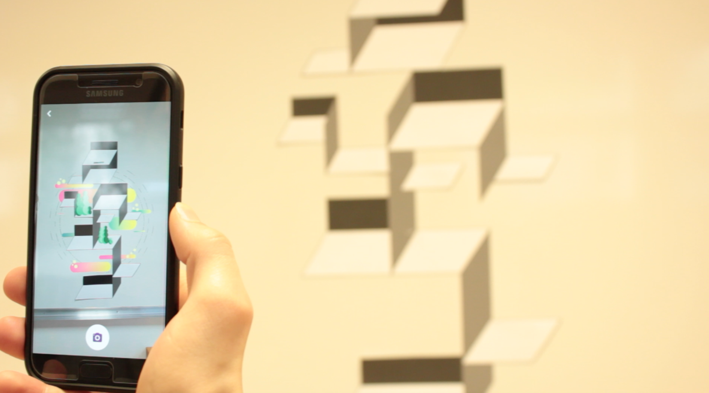

Project: Christmas workshop with the speaker Dino Voodoo, illustrator and freelance grapher. Production of a Safety in virtual/augmented reality showing Lycée Bréquigny’s formations, with the smartphone app « Bear ».
Description: quartet work for the STI2D formation (sustainable development). The printed visual represents an abstract geometric shape. By scanning with the app, an animation opens to increase the printed visual.
 Download videoPurpose: with an animation symbolizing the construction of an urban system, we recall the industry field, sustainable development and technics which are the heart of the training.